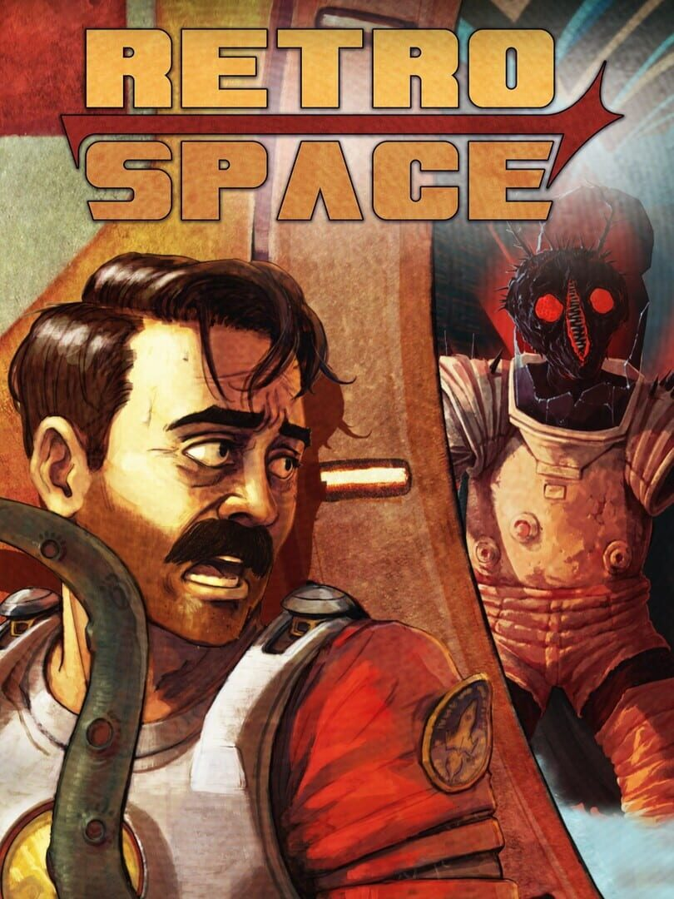

RetroSpace
RetroSpace
Details
 |
|
| Playtime | Not Played |
| Last Activity | Never |
| Added | 2026-10-05 12:55:11 |
| Modified | 2026-10-05 12:55:33 |
| Completion Status | Not Played |
| Library | Steam |
| Source | Steam |
| Platform | PC (Windows) |
| Release Date | 2026-10-01 |
| Community Score | |
| Critic Score | |
| User Score | |
| Genre | Adventure Indie Shooter Simulator |
| Developer | The Wild Gentlemen |
| Publisher | Kwalee |
| Feature | Single Player |
| Links | Steam YouTube Discord Xbox Playstation Twitch |
| Tag | Action Adventure Atmospheric Boomer Shooter Choices Matter Combat Cyberpunk First-Person FPS Horror Immersive Sim Multiple Endings Narrative Retro Sci-fi Shooter Singleplayer Space Stealth Survival Horror |
Description
KEY FEATURES
Play Your Way – Sneak, hack, create diversions, lure enemies into traps, discover hidden routes, or fight your way through Aurora 5. Every obstacle has multiple solutions.
A True Immersive Sim – Manipulate interconnected systems, exploit environmental hazards, turn security against your enemies, and solve problems creatively.
Mutamods™ – Unlock powerful mutations that enhance stealth, combat, exploration, and mobility. Beware - every upgrade may come with unexpected side effects.
Explore Aurora 5 – Navigate a massive interconnected space station filled with secrets, shortcuts, alternate paths, and hidden areas.
Death, Cloning & Consequences – Death is not the end. Clone yourself, recover your lost gear, and deal with the consequences of repeated resurrection.
Disco-Punk Space Horror – Experience a unique blend of retro-futurism, cosmic horror, dark humor, and narrative-driven exploration.
Reactive Gameplay – Learn enemy behaviours, adapt your strategy, and use the station's systems to gain the upper hand.

RetroSpace is a love letter to the immersive games of yesteryear, with a modern sensibility and some unique, genre-bending twists.
IMMERSIVE DISCO-PUNK SPACE-HORROR!
You were but a simple janitor, now you are the last hope of all humanity! A space station has been swallowed by a sentient black hole, weird animal and plant hybrids roam the corridors, and even time itself has gone completely mad around you. Navigate with stealth or unleash a blast-tastic odyssey through the cursed station. Will you be the hero Earth needs, or are you groovin' to save your own soul? The choice is yours!

SURVIVING AURORA 5
The enemies on the station of Aurora 5 are completely different from each other, so you've gotta channel your inner mad scientist to outsmart 'em. Survival ain't just luck; it's about cracking the code on their behavior, special abilities, and weaknesses. You will also have to deal with a variety of environmental factors. Security systems - for example - can be extremely deadly unless you find a way and turn them into traps or even unlikely allies...
STEALTH VS ACTION
Don't like conflicts? Would you rather hide in the dark or find a way around your enemy? Or are you the kind who goes completely mental and attacks your opponent with its own flaming body part? The choice is yours, janitor! RetroSpace allows you to solve situations in many different ways. Total avoidance is as legit as a diversion, trap setting, or full-on "balls-to-the-wall" action.

THE STATION
Aurora 5 is a massively interconnected and open station that you are free to explore. As you discover new and new areas, shortcuts, and secret paths will open up to previously visited locations. This can be accessed through a (mostly) peaceful central HUB area, where you can return anytime when you can't take the madness and horror any longer.
MUTAMODS, DEATH, AND REBIRTH
Mutamods™ can make your life much easier and enhance your combat and stealth skills. Want to become a tentacle-armed, mind-controlling, shadow-lurking mutant madman? Be our guest. BUT BEWARE! Mutamods™ may have unexpected and irreversible side effects...
Death will be integral to your journey, but don't worry! Aurora can produce an infinite number of clones of you. But here's the hitch – cloning ain't all sunshine and rainbows. You should be prepared for some severe cloning degenerations, and of course, it is highly recommended to get your stuff back from your former self. Get ready for a wild ride through the psychedelic unknown, where every death is just another funky twist in your interstellar journey!

BLURB
2177 - Humanity's last hope is the AURORA fleet, a convoy of floating space stations searching for a new home.
On this century-long mission, humans spend their lives in deep sleep, while robots, androids, and a dedicated team of chosen janitors guard their dreams.
Until one of the gigantic city-ships derails off its course...
Sucked into a black hole...
And now it drifts in the void, lost in the infinite blackness of space.
The corridors are infested with mutants, and the ship is constantly jumping between two time periods.
Is there a way home? Will the madness ever end?
A nameless janitor is looking for answers and a way out.
A way out of the endless loop, the evil void, and the cosmic madness...
This is... RETROSPACE!"

In space, no one can hear you groove!